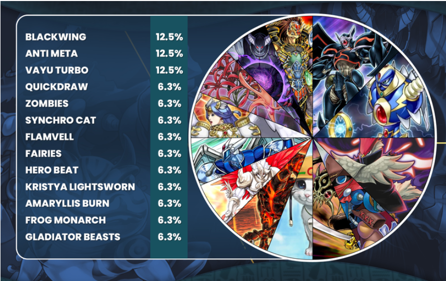

Edison
Edison è il secondo retro fromtao più diffuso tra i giocatori
di Yu-Gi-Oh! preceduto solamente da Goat Format. Visata la
sua recnete diffusione si pensa che
raggiungerà presto una popolarita ancora maggiore, in particolare
quando inizierà a ricevere maggiore supporto
da piattafome online quali DuelingBook
Cos'è il formato Edison?
L'Edison format si chiama in questo modo perché
basato sul card pool e sulla banned list che furono
giocate al torneo Shonen Jump Championship nella città
di Edison tra il 24 e il 25 aprile del 2010. Questo
fromato racchiude la diffusione dei primi synchro,
la prima tipologia di nuovo mostro da extra deck introdotto
dalla nascita del gioco, che è nache una delle più
apprezzate dai giocatori. Ed è anche l'avvento dei
primi archetipi, cioè gruppi molto ristretti di carte
legate da una parte del nome in comune tra i quali
Fedele Della Luce (Lightsworn), Alanera (Blackwing)
e Gladiatore Bestia (Gladiator Beast).

Il formato è caratterizzato da un metagame (cioè i
mazzi che ottengono risultati migliori e sono portati
più di frequente dai giocatori ai tornei) estremamente
vario e molto bilanciato dove anche i mazzi tipicamente
considerati più forti non possono abbassare la guardi
contro altri più inusuali. A ciò
consegue la necessità di molta abilità ed esperienza
per riuscire ad ottenere risultati durante un torneo in
quanto si devono affrontare una moltitudine di mazzi
differenti ognuno con la sua strategia, che varia dall'
aggro (Lightsworn) fino a strategie control (Quickdraw
Dandywarrior) per questo e vista anche la maggior rapidità dei mazzi
rispetto a quelli diffusi nel Goat Format non sono pochi
quelli che sostengono che Edison sia anocra più arduo.
Rispetto a com'era effettivamente nel 2010 attualmente il
meta Edison è differente per varie motivazioni.
La prima è sicuramente quella economica, mazzi quali
Machina Gadget che ai tempi erano molto popolari per il
prezzo estremamente ridotto sono meno usati, infatti ora
grazie alle continue
riastampe e alla minore quantità di giocatori del formato
quasi tutti i mazzi sono accessibili ad un prezzo molto basso.
La seconda è la maggiore conoscenza e lo studio da parte dei
giocatori, mazzi che nel 2010 erano popolari per la loro forza
come Quickdraw Dandywarrior stanno ora facendo più fatica
Come tutti i formati escluso l'advance anche edison purtroppo
non è ancora supportato dalla Konami (azienda produttrice
del gioco), ma la community si impegna moltissimo per
permettere ai giocatori di giocare il formato sia a livello
amatoriali sia a livello estremamente competitivo con tornei
che tutt'oggi raggiungono decine di giocatori.
Alcuni mazzi popolari
Vista l'estrema varietà di mazzi validi disponibili nel formato
mi limiterò ad elencarene qualcuno che ritengo o più iconici
o che semplicemente mi piacciono maggiormente.
Machina Gadget

Questo mazzo come detto in precedenza non è stato reso popolare
non tanto per la sua forza, ma per la sua accessibilità economica
e per la facilità con cui si reperivano le carte per costruirlo
infatti l'interità del mazzo era facilmente componibile per poche
decine di euro comprando 3 mazzi pre costruiti più poche aggiunte (gli
iconici gadget) a differenza di altri suoi contemporanei che
costavano moltodi più e le cui carte erano spesso difficili da reperire.
Il mazzo vanta una strategia aggro (basata sull attaccare frquentemente)
estremamente semplice: evocare i mostri gadget che grazie al loro
effetto permettono di aggiungere alla mano un altro gadget dal deck
alla mano che verrò poi utilizzato per evocare dalla mano o dal cimitero
Machina Fortress, mostro che gli avversari hanno tendenzialmente
difficoltà a gestire. Inoltre il mazzo può permettersi di giocare
un'elevata quantità di trappole che gli permettono di gestire le minacce
dell'avverasrio ed essendo i mostri tutti di tipo macchina può giocare
rimozione di limite facilitando gli otk(one turn kill).
Lightsworn
 Lightsworn (Fedele della Luce in italiano), è uno dei mazzi più
iconici del mondo di Yu-Gi-Oh! e uno dei primi e dei pochi ad avere
una strategia basata sul mandare le proprie carte dal deck al cimitero.
Il mazzo ha una strategia aggro molto spinta grazie alla sua rapidità e
a mostri estremamente potenti come drago del giudizio. Nel 2010 era
meno popolare rispetto ad ora per il suo prezzo molto elevato, ora invece
è molto diffuso e popolare.
Lightsworn (Fedele della Luce in italiano), è uno dei mazzi più
iconici del mondo di Yu-Gi-Oh! e uno dei primi e dei pochi ad avere
una strategia basata sul mandare le proprie carte dal deck al cimitero.
Il mazzo ha una strategia aggro molto spinta grazie alla sua rapidità e
a mostri estremamente potenti come drago del giudizio. Nel 2010 era
meno popolare rispetto ad ora per il suo prezzo molto elevato, ora invece
è molto diffuso e popolare.
Blackwing
Una altro mazzo estremamente popolare e famoso del formato, balckwing è
probabilmente anche il più forte grazie alla sua estrema adattabilità
e variabilità di gioco, sono infatti veramente poche le cose che riescono
a bloccare il mazzo che ha un'estrema capacità di ripresa grazie a Vortice
Nero una carta che assicura al mazzo sempre una carta aggiuntiva alla
mano per poter gestire al meglio una situazione, che sia andare all'attacco
al momento opportuno oppure recuperare da una situazione difficile